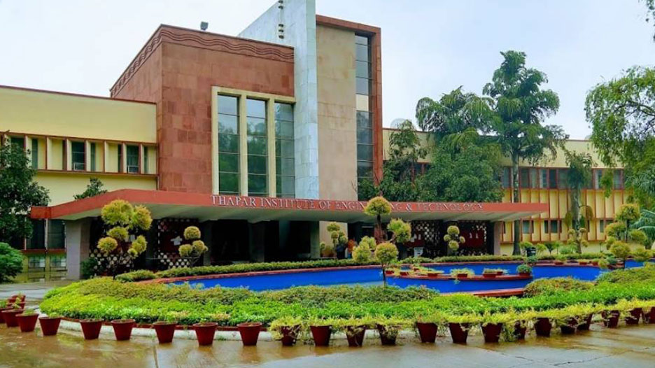
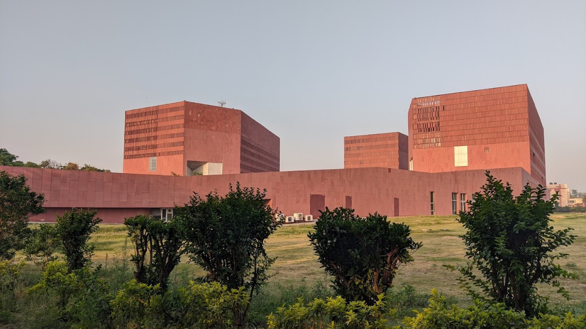
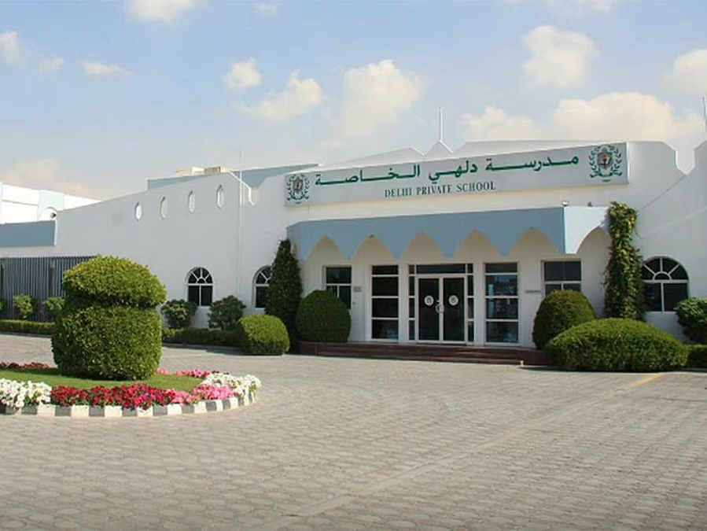

Capstone research · Thapar Institute
OngoingSatellites and drones photograph the same objects very differently. We test whether models like CLIP stay consistent across the two.
Open to data science, ML & SWE roles · 2026–27
Final-year Computer Engineering student at Thapar Institute, working where data science meets engineering. I frame the question, build and evaluate the model, then ship it as a tested service on Google Cloud.
Currently · Xebia
Oct – Dec 2026 · cohort of 30Xebia's programme for taking engineers from “can code” to “can ship”: building, deploying and defending a real AI-powered product, the way Xebia's Forward Deployed Engineers do for clients.
01 — About
I grew up in the UAE and finished school at Delhi Private School, Sharjah, before moving to India for a B.E. in Computer Engineering at Thapar Institute of Engineering & Technology, Patiala.
My work sits across four areas: data science, machine learning, cloud and software engineering. I like problems where a model has to earn its place. That means leakage-safe features, time-based splits, calibration and fairness checks, and A/B tests designed before anything is claimed.
I also care about what happens after the notebook. In ShopSense I kept a Gemini re-ranker off the default path because it cost about 80× the latency for a 0.035 NDCG gain, and shipped the cross-encoder instead as a FastAPI service on Cloud Run with Docker and 189 tests. On the software side I build with React, Node and Express, and I use Claude Code and Cursor for planning, prototyping, testing and automation.
02 — Selected work
Capstone research · Thapar Institute
OngoingSatellites and drones photograph the same objects very differently. We test whether models like CLIP stay consistent across the two.
Product search over 48,862 Amazon products, scored against human relevance labels on quality, speed and cost per query.
Predicts which new Stack Overflow questions will still be unanswered after 24 hours, across 1.26M questions.
Flags students likely to fail or withdraw while there’s still time for a tutor to step in.
Identifies a bean’s roast level, then finds defects: 17 types for green beans, or a bean-by-bean detector for roasted ones.
A team project manager with Kanban boards, subtasks, shared notes and three permission levels.
03 — Toolkit
Python · SQL · Pandas · NumPy · statsmodels · hypothesis testing · A/B test design
scikit-learn · LightGBM · PyTorch · TensorFlow · Keras · SHAP · ONNX
AWS (EC2, ECR, Auto Scaling) · GCP (Cloud Run, Compute Engine, BigQuery, Cloud Storage, Vertex AI) · Docker · Docker Hub · GitHub Actions · Linux
FastAPI · REST APIs · React · Node.js · Express · JWT auth · C++ · JavaScript
MySQL · MongoDB · Redis · Apache Kafka
pytest · Git · Postman · Selenium · TestNG · Claude Code · Cursor
Coursework Probability & Statistics · Machine Learning · Data Engineering · Artificial Intelligence · Cloud & DevOps · DBMS · Data Structures · Algorithms · Operating Systems · Software Engineering · OOP
04 — Journey



Thapar Institute of Engineering & Technology, Patiala · CGPA 7.6
Delhi Private School, Sharjah, UAE
Delhi Private School, Sharjah, UAE
05 — Contact
I'm looking for data science, machine learning, cloud and software engineering internships and new-grad roles. The fastest way to reach me is email.
anoopsinghsachdev@gmail.com